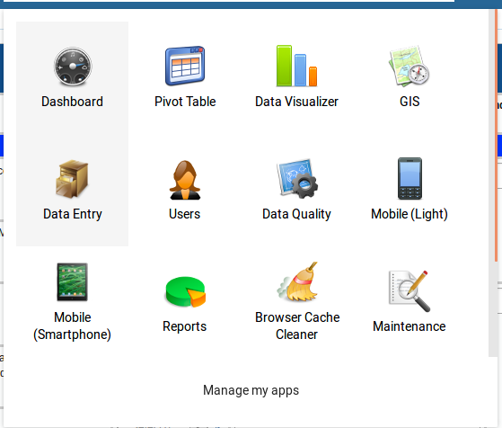
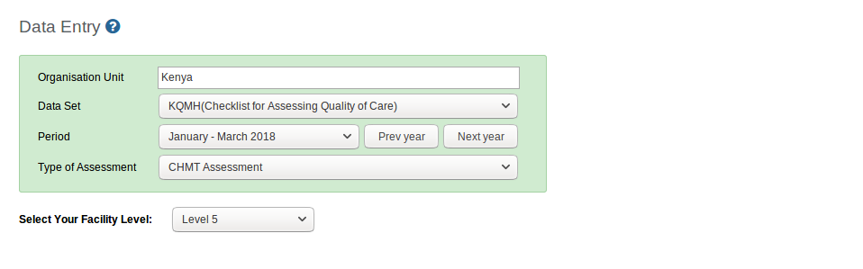
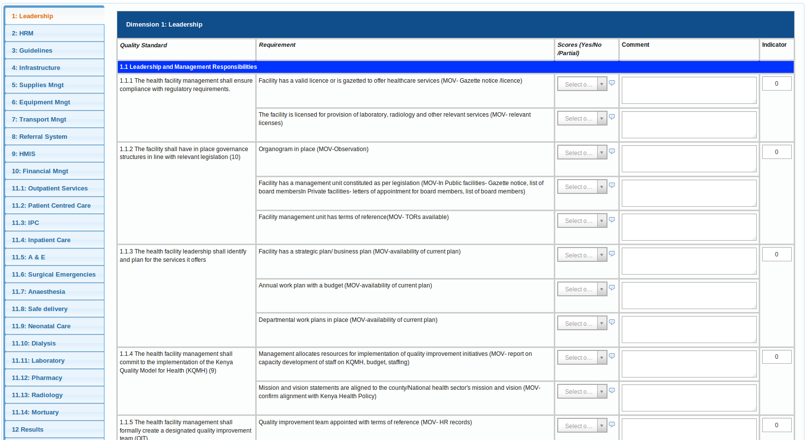

Data Entry¶
After logging into the system, hover mouse pointer/click on the Apps icon on the far left as shown on the figure below. On the dropdown that appears, click on Data Entry icon.

This navigates to the data entry page, as shown on the figure below. For data entry forms to appear, you will be required to first select an organization unit/facility you are reporting for on the left panel, the dataset, reporting period and type of assessment you’re you are reporting on, which comes up after selecting the organization unit, Dataset and period that the user is reporting for.

Data Entry Forms¶
Below is the sample data entry form, the left bar showing different dimensions categories;
